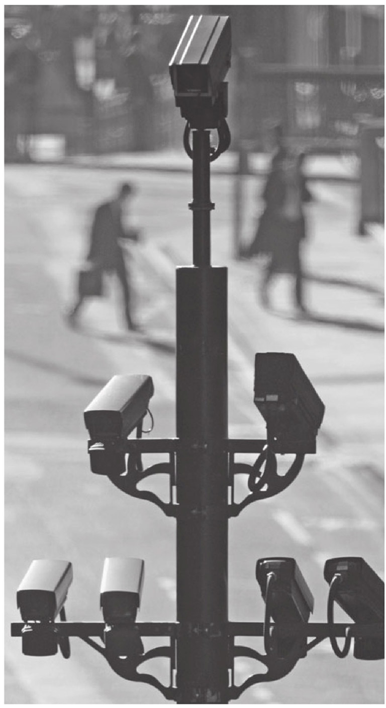
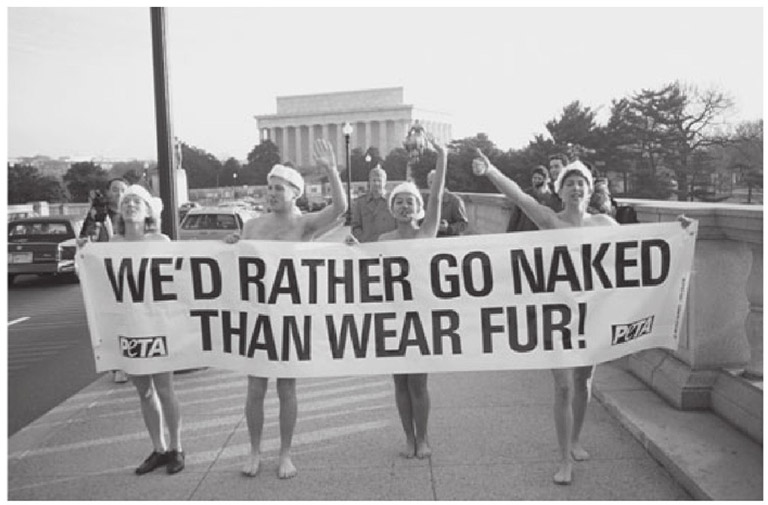
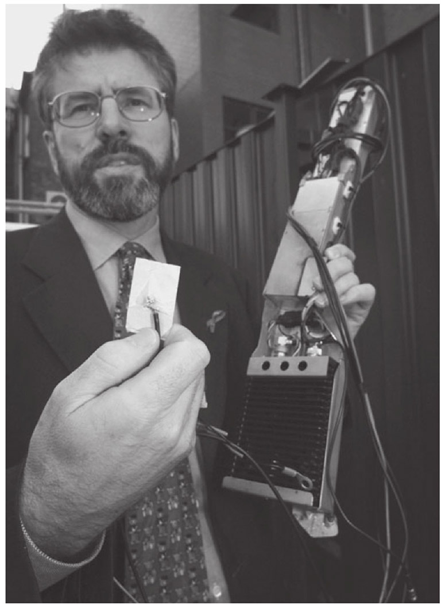
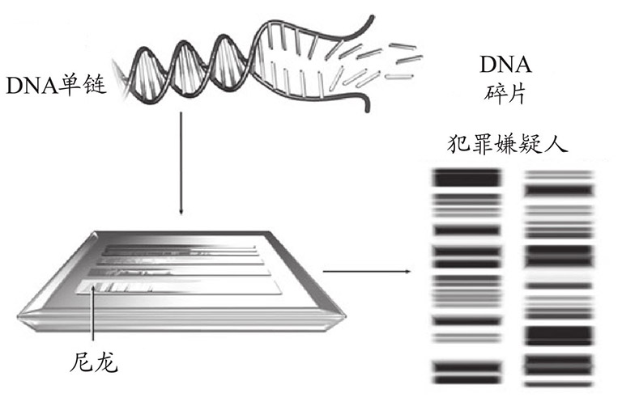
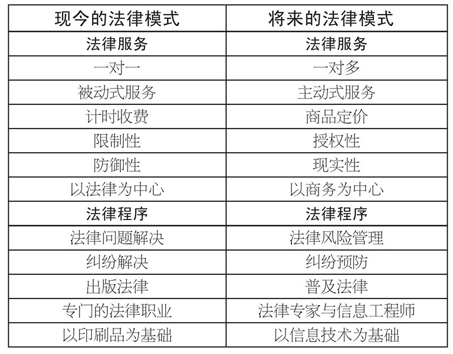

法律就像战争一样，似乎是人类社会不可避免的。但是法律的未来是什么？可以肯定的是，法律一直处于变动状态。著名的美国最高法院大法官本杰明·卡多佐，对这一现象作出了恰如其分的描述：
这是一个飞速改变的世界，如果法律准备充分应对它所面临的新威胁与新挑战，那么它因此受到的发展和适应的压力，将比以往任何时代都要大。毫无疑问，在过去的50年内，法律的特征已经经历了深刻的变化，然而关于它的未来，仍然争议不断。有人认为法律正在垂死挣扎，也有人提出相反的预测，指出了法律具有持久力量的无数迹象。哪一种说法是对的？令人好奇的是，两种观点都有一定的道理。
一方面，尽管有关“法律已死”的报告夸大其辞，但也有充分证据证明，很多先进的法律制度存在弱点，症状包括法律的私有化（案件和解、辩诉交易、替代性争端解决机制、拥有广泛自由裁量权的监管机构大规模的崛起，以及法治在数个国家中的衰退）。另一方面，法律所扮演的角色已经发生了革命性的转变，这意味着法律既富有弹性，又相当稳固。这一转型既包括法律为了追求效率、社会正义或者其他的政治目标，向私人领域的延伸，也包括法律的全球化，以及通过联合国、地区组织与欧盟而得以实现的国际化，更包括技术对法律产生的巨大影响。
本章旨在揭示当代社会发生的一些重大变化，并阐述这些变化给法律带来的艰巨挑战。
法律与变化
为了给法律发展的进程列出时间表，人们作出了很多努力。法律史学者们致力于确定法律进化的中心特征，从而沿着这一连续的时间轴，对不同的社会加以定位。19世纪末，杰出的学者亨利·梅因认为，法律与社会已经实现了“从身份到契约的过渡”。换言之，在古代社会，个人因其身份而与各种传统集体紧密相连；而在现代社会，个人被认为具有自主性，可以与他们选择的任何人自由地缔结合同和组成社团。
但是有些人在这一运动中看到了逆转。在很多情况下，合同自由只是表象，而非事实。比如，在面对电信、电力或者其他公用设施的格式合同（或者附合合同）时，消费者能有多少选择呢？当跨国公司作为雇主提供一份工作，并给出格式合同时，试图针对合同条款讨价还价的雇员又在哪里呢？确实，很多先进的法律制度通过各种形式的保护消费者立法，争取提高个人在交易中的地位。但这只不过是轻量级选手踏上重量级选手的拳击场，结果如何，几乎毫无疑问。是不是“身份”以消费者或者雇员的形式回归了呢？
法律制度的发展同样考验着社会学理论专家们的思维。马克斯·韦伯的思想对思考法律及其发展有着强大的影响。他以不同门类的法律理论为基础，发展出了法律的“类型论”。这一理论的核心是“理性”思想。他区分了“形式制度”与“实体制度”。这种区分的核心问题是，一种制度在多大程度上能够实现“内部自我维系”，即该制度在多大程度上具备作出判决所需要的规则和程序。其次，他区分了“理性”与“非理性”的制度。这一区分描述了法律规则和法律程序适用的方式。如果法律命题构成了逻辑清楚、内在一致的规则体系，囊括了所有能够想象得到的事实或者情况，那么它就达到了最高程度的理性。
韦伯举了一种形式非理性的法律制度的一个实例，即神裁现象。它通过诉诸某种神秘力量来决定某人是否有罪。而一种实体非理性的法律制度可能是由法官完全根据他自己的个人意见来判案，而不适用任何规则。韦伯认为，如果法官适用的不是规则，而是道德原则或者正义理念的话，他的裁决则是实体理性的。最后，如果法官遵循由法律规则与原则构成的规则体系，那么这一制度就构成了形式逻辑意义上的法律理性。这就接近了韦伯的法律演化进程理论中的理想模型。 [1]
但是在很多社会里，韦伯这种理性的、广泛全面的、连贯一致的法律制度模式，被急剧加强的行政控制削弱了。行政机构的管辖权已经有了惊人的扩张，它们通常是法令的产物，拥有着广泛的自由裁量权。在有些情况下，这些机构的自由裁量权明确地免受司法审查。
比如，在多个欧洲国家，前国有行业的私营化（比如电力行业和通信行业）催生了一批监管机构，它们有权进行调查、制定规则和罚款。普通的法院被边缘化了，法律自身的作用也因此而扭曲。这种发展代表着对法院权威性和开放性的威胁。而且，自由裁量权的扩张，削弱了法治对于遵守清晰规定个人权利和责任的规则的坚持。这种具备自由裁量性质的监管接近于韦伯的实体法律理性的概念，而法治理念则代表了形式法律理性的概念。
在更为激进的关于法律发展的理论中，马克思主义理论认为，法律最终必将全面消亡。这一预测建立在历史决定论思想的基础之上：依据不可阻挡的历史力量来解释社会演化。马克思和恩格斯提出了“辩证唯物主义”理论，根据以下理论来解释历史的进程：先是一方与其对立面（或者反面）各自发展，然后，通过接踵而至的冲突，矛盾的两面得到了统一。马克思认为，每一个经济发展阶段都有其对应的阶级制度。例如，在手工作坊生产阶段，存在着封建阶级制度。在蒸汽工厂生产得到发展之后，资本主义制度取代了封建制度。阶级是由生产资料决定的，因此，一个人的阶级取决于他与生产资料之间的关系。马克思的“历史唯物主义”基于物质生产资料是确定的这一事实，这在部分程度上是辩证的，因为他看到了两个互有敌意的阶级之间不可避免的冲突。革命终将发生，因为资本主义生产模式以个人所有权与未经计划的竞争为基础，这一点与工厂的劳动生产中日益增长的非个人化、社会化特征截然相反。他预测，工人阶级将会掌握生产资料，并建立起无产阶级专政；然后这一专政将会被无产阶级的共产主义社会所取代，在共产主义社会里，法律最终将会消亡。因为法律是阶级压迫的工具，在不存在阶级的社会里，它是多余的。这一论点的精神暗含在马克思的早期论著之中，然后由列宁加以重述。该论点更加成熟的版本则宣称，在无产阶级革命之后，资产阶级政府终将被清除，并为无产阶级专政所取代。在反革命抵抗被击败之后，社会将不再需要法律或者政府，它们都将“逐渐消亡”。
不管采取什么样的理论来解释法律变化的方式和形式，我们都不可能否认，法律的未来将会被大量棘手难题所困扰。最大的困难在哪里呢？
来自内部的挑战
除了官僚管制及由此产生的恣意的自由裁量权（如上所述）之外，所有地方的法律制度还需要面对一系列棘手的问题。有些问题我们已经在第二章中提及。最为显而易见的问题之一是所谓的“反恐战争”。我们无须任何洞察力也能意识到，在近十年内，许多法律制度正面临着一系列考验其核心价值的问题。当自由社会必须对抗削弱其根基的威胁时，它将如何调整自己对于自由的承诺？绝对的安全固然无法实现，但即使是对于恐怖主义较为温和的防范，也有它的代价。任何一位搭乘飞机的乘客都能意识到，现今的安检制度不可避免地造成了延迟和不便。但是，尽管我们不可能完全预防犯罪，现代技术确实为我们提供了异常成功的工具，用于阻吓与逮捕罪犯。比如闭路电视摄像头可以监测到非法活动，其记录为检察官在法庭上指证被录下的坏人提供了有力的证据。法律应该在多大程度上容忍这样的监视呢？我们来一起思考下面的例子，它将有助于阐述这种困难和对互相对立的权利进行的无法避免的权衡——这也是现代法律制度的显著特征。

图17 闭路电视摄像头监视着很多城市的街道。
这是犯罪行为造成损害的一个很小的例子。但是如果认为大多数人并不会支持那些可能成功阻止犯罪和恐怖主义的措施——特别是2011年9月11日之后——那就未免太天真了。当然，如果有摄像头来记录某个恐怖主义分子的一举一动，是不是就可以挫败他（或者是“她”，只不过可能性较小）了，正如可以挫败那个划伤我的爱车的流氓一样？守法的公民们一定会感到更加安全，因为他们知道监视正在进行。而且，为什么不呢？民意调查确认了民众的广泛支持。除了强盗、诱拐者或者放炸弹的人之外，有谁还会害怕自己在公众场所的行为被录下来？而且我们不应当止步于此。技术进步让追踪个人的财务交易信息和电子邮件通信变得很容易。“智能”身份证的引进、生物识别技术和电子道路收费制度代表着监视手段的重大进步。只有恶人才有理由反对这些行之有效的犯罪控制手段——如果这个令人欣慰的看法确实正确的话。
我们不能对恐怖分子犹疑失措，但是我们愿意用何种程度的自由受限来换取安全呢？在“9·11”事件的余波之中，政客们，尤其是在美国的政客们，寻求扩张国家的权力来拘禁和拷问疑犯，窃听通信，并监视那些可能介入恐怖主义的人士的行动。法律在此面临着难以克服的困难。在战争期间，严刑峻法可能无法避免，诸如专断的逮捕权、拘留权、未经审判的监禁、秘密审判等等。但一个自由社会能忍受这些侵犯自由的行为多久？这些行为对法治和个人权利会造成什么样的持久性损害？法律可以继续保护公民吗？或者公民需要来自 法律的保护吗？法院能够作为坚实壁垒，抵御这些对自由的攻击吗？
实行种族隔离制度的南非，是一个试图对“恐怖主义”作出全面攻击的典型社会。严刑峻法以立法的形式，严重侵害了法院对于公民自由领域的管辖权。在广泛的范围内，可以质疑行政权行使的司法权被废除了，大大削弱了法官的权威。在关系到基本自由事务（比如在拘禁、驱逐出境、禁令和新闻审查）方面的日益膨胀的、不受限制的行政自由裁量权，将法官降至行政行为的无力旁观者的境地。这是对于他们职业的严重扭曲。而且，即使一位勇敢的法官能够对法律作出有利于自由的解释，在实践中，他的努力也很可能被废止法律效力的立法挫败。
另外一个没这么突出的、带来变化的因素是法律的国际化，或者说全球化。这个世界已经见证了国际组织（如联合国）或地区组织（如欧盟）日益上升的影响力和重要性。这些法律渊源削弱了内国法的权威性。法律也没有免受麦当劳效应的影响——强有力的跨国公司影响着银行、投资、消费者市场等等。所有这一切都对法律产生了直接影响。
此外，在本书第二章讨论的数个领域内，绝大多数法律制度都面临着尚未解决的困境。有些问题该章已经涉及。这些问题既是实体问题，也是程序问题，还包括一些关于刑事司法制度的窘境。在经常涉及高深专有技术的复杂商业犯罪面前，刑事审判的未来会是什么样？在这种情况下，由陪审团来审判更合适，还是根本无须陪审团？大陆法系的纠问制是否比普通法系的对抗方式更为可取？在很多法域内，连诉诸法律的机会都很不均等。穷人并不是总能够充分获得诉诸法院或者其他争端解决机构的救济机会。类似的棘手问题同样困扰着私法领域。比如，很多法律制度在与人身损害赔偿和保险对于赔偿金判决的影响这类的难题进行角力。
尽管法律自身并不能改变社会秩序和社会价值观念，也不能切实维持它们，但它有影响和塑造态度的能力。那些通过法律达成社会正义的努力所取得的成功并非不实之誉。例如法律宣布种族歧视为不合法，而这只不过是它在平权事业中取得的一小步进展。尽管没有法律的介入，我们什么也无法实现，但是我们必须承认法律的局限。现在有一种逐渐将道德和社会问题法律化的倾向，甚至有人认为，成为西方民主法律制度的那些价值观念和相应的制度，可以富有成效地出口或者移植到不太发达的国家。这可能是个乌托邦式的观点。同样过于乐观的观点可能是：经济发展必然预示着对于人权的尊重。经常有人提出这一观点。
现代政府支持极富野心的、经常近乎社会工程的立法计划。立法在多大程度上能够让社会真正变得更好，或者能够抵抗歧视与不公？法院是不是改变社会的更为合适的工具？在美国，一个积极进取的最高法院有权宣布法律违宪，立法机构除了保持一致之外没有其他选择，它在具有重大影响的布朗诉托皮卡市教育委员会案之后一直如此。法院达成一致意见，宣布设立黑人和白人学生分别入学的公立学校具有“本质上的不平等性”。这一里程碑式的判决为种族融合和民权运动的兴起打开了大门（一如字面意义）。尽管歧视可能会一直存在，但很少有人会否认，这一判例改变了法律与社会，并让它们变得更好。
达·芬奇密码
这样的时刻终会来临；人们，像我这样的人们，对待谋杀（其他类别的）动物的态度，与我们现在对待杀人的态度一样。
莱昂纳多·达·芬奇

图18 不管我们给予动物什么样的法律地位，在真正保护动物权益之路上的主要障碍是执法力度不够。
如果没有有效的执法，法律是无法完成崇高的抱负的。立法禁止虐待动物就是个例证。活体解剖、填鸭式喂养、毛皮贸易、打猎、陷阱、马戏团、动物园、骑牛比赛等等只是一小部分实例，此外还有那些有意让动物蒙受痛苦的行为，每天都在让全世界数以百万计的动物遭受悲惨的折磨。很多法域都颁布了反对虐待动物的立法，但是在没有严格执法的情况下，这些法律仅仅是一张空头支票。而且执法是一个主要障碍：发现这些违法行为有赖于检查员，而他们没有逮捕权，检察官又很少优先考虑虐待动物案件。再者，法官也很少施以足够的处罚，更不用说法律规定的处罚本身就不够严厉。
法律与动物的痛苦
人类之外的动物生灵得到权利的一天将会到来。除了暴君横加干涉之外，没有什么可以阻止它们得到这些权利。法国人已经认为，黑色的皮肤并不是一个人平白遭受虐待者的恣意对待，却无人理会、无法得到救济的理由。有一天，我们也许会认识到，腿脚的数量、皮肤的绒毛或者是骶骨的末端是否融合 [2] ，同样不足以构成将一个敏感的生灵弃置于这种厄运的理由。这条不可逾越的界限还由别的什么东西构成吗？是理性思维的能力，或者说，是对话交流的能力吗？……问题并不在于它们是否能够理性思考，也不在于它们是否能够说话，问题在于，它们就得遭受痛苦吗？为什么法律一定要拒绝对任何敏感的生灵加以保护？……人类将保护延伸至每个能够呼吸的事物之上的时代终将来临……
杰瑞米·边沁，
《道德与立法原则导论》
在一个焦虑感日益增加的社会里，期望法律解决威胁我们未来的那些问题成为一种可以理解的趋势。近年来，环境污染的危害、臭氧层变薄、全球变暖，以及其他对很多种类的动物、海洋生物、鸟类和植物的生存的威胁，已经变得越来越严重。越来越多的国家运用立法手段，试图限制或者控制对于地球的摧毁。但是，法律常常被证明是件钝器。比如，在公司涉嫌环境污染刑事责任的情况下，定罪时必须有证据证明控制这家公司的人必然知情，或者故意为之。而证明此节之难已是臭名昭著。即便这些行为构成严格责任下的违法行为，法院施加罚款所起到的阻吓作用也相当有限。也许为数众多的、几乎涉及环境保护每个方面的国际条约、公约和宣言可能更加有效，但是就同法律一样，可以预见的障碍仍然是，它们能否得到有效执行。
技术挑战
法律竭力跟上技术的进步并不是件新鲜事。但是最近的20年中，这一竞赛产生了史无前例的转型。与数码世界相关的焦虑极易催生警惕和不安。信息技术的出现对法律形成的巨大挑战，仅仅是众多例证中较为明显的一个。通过法律手段控制互联网运营与内容的努力，已经以众所周知的失败而告终。事实上，在很多人心目中，互联网自身的无政府主义和对于监管的抵制，正是其力量和魅力之所在。但是，网络空间真的超出了监管之外吗？著名的法学家劳伦斯·莱西格令人信服地辩称，网络空间还是可以控制的，并非必然通过法律，而是通过网络空间组成结构的核心部分，它的“代码”：构成网络空间的软件和硬件。他认为，这种代码要么创造一个自由占主导地位的空间，要么创造一个充满压迫与控制的空间。事实上，商业考虑越来越促使网络空间明确地接受管制。网络空间已经变成了这样一个地方：网络空间中的行为受到的控制甚至比现实空间中的更强。最后，他坚持，这是件由我们决定的事。它是体系架构的选择：什么样的代码才可以统治网络空间？谁又将控制这种代码？在这方面，核心的法律问题是代码。我们需要选择赋予这种代码以活力的价值观和原则。
信息不再仅仅是力量。它是规模巨大的生意。近年来，服务行业成为了国际贸易中增长最为迅速的部分。它占世界贸易总额的三分之一——这一比例仍在扩大。现代产业化社会的一个核心特征是对信息储存的依赖，这一认识已经成为老生常谈。当然，计算机的使用极大加快了信息收集、储存、提取和流转的效率与速度。政府和私人机构的日常运转都需要个人数据的持续供应，用于高效管理为数众多的服务，这些服务已经成为现代生活与公众期望中不可分割的一部分。因此，我们举出一个最明显的例子：执法机构之所以能提供医疗保健、社会安全、防范与侦查犯罪等服务，就是因为它们能够接触海量的数据，而且公众能够自愿提供这些数据。私营行业提供的借贷、保险以及工作，同样催生了几乎难以满足的对于信息的渴求。
老大哥？
未来不可能见证隐私的扩张。法律可以阻止显而易见的、残酷无情的、滑向奥威尔式噩梦的趋势吗？在公共行业和私营行业中，以“低科技的”方式收集交易信息已经平平无奇。在很多发达社会中，除在公共场合用闭路电视进行日常监控之外，对手机、工作场所、车辆、电子通信和在线活动进行监视，已经日益变得理所当然。比如，在工作场所进行的越来越多的监视，不仅正在改变着工作环境的特征，而且正在改变着我们所做的事和我们做事的方式。意识到我们的行为正在受到监视，或者可能受到监视，这会削弱我们心理和情绪上的自治力。事实上，逐渐依赖于电子监视，很可能会对我们的关系和身份产生根本性的改变。在这样的世界里，雇员不太可能高效地执行他们的任务。如果这种事情发生了，那么窥探着的雇主最终会发现，他的所得与所求背道而驰。

图19 新芬党主席盖瑞·亚当斯正在展示在该党使用的车辆中发现的、精巧的监听设备和数字追踪设备。
对隐私发展趋势的预测一点也不鼓舞人心；在未来，我们的私人生活很可能会受到更加精致复杂、更加令人警惕的侵入。这些侵入手段包括生物识别技术的更多运用和更为灵敏的搜索手段，比如可以穿墙入室、透过衣物的卫星监测，以及“智能尘埃”设备（微型无线微机电传感设备，缩写为MEMS，可以感知包括光线与振动在内的任何现象）。这些所谓的“微粒”——就像一粒沙那样微小——能够收集数据，并通过双向频带无线电波在1000英尺的距离内发送这些数据。
当网络空间日益成为一个危险的领域之时，我们每天都能听到最新发生的、令人不安的、对于网民的袭击。随着这种监视的无孔不入，恐惧不断增加，在“9·11”事件之前，这些恐惧就直指令人困扰的、有能力侵蚀我们的、自由的新技术。当然，关于隐私有多么脆弱的报道至少已经流传了一个世纪之久。但是最近十年内，这些报道的口吻变得越来越紧迫。而且这里有个悖论。一方面，我们残存的一点隐私依然具有复仇之心，让最近计算机技术的发展饱受诟病；另一方面，互联网被称为乌托邦。在这些陈词滥调互相辩论之时，指望它们所反映的问题能有明智的解决方法，未免失之轻率，但是在这两种夸大其词的主张之间，很可能存在着接近真相的东西。就隐私的未来而言，至少我们可以确定无疑的是，法律问题正在我们的眼皮底下产生变化。如果在原子笨拙统治的领域内，我们也只能有限地保护个人不受监视的侵害，那么在我们二进制的美丽新世界里，前景又能好多少呢？
当我们的安全受到威胁的时候，我们的自由也会不可避免地受到威胁。在这个世界里，我们的一举一动都在受到监视。这侵蚀着自由，而自由本是这种窥探常常想要保护的东西。我们自然必须保证，采取手段以提高安全程度的社会成本，不会高于它所带来的利益。因此这样的结果并不令人惊讶：在停车场、购物中心、机场以及其他公共场所安装闭路电视，不过是将犯罪驱至别处，违法者只是简单地去了其他地方。这种入侵打开了通向极权主义的大门。此外，在一个充满监视的社会里，互不信任与互相怀疑的气氛极易产生，人们对于法律与执法者的尊重会减少，而且犯罪检控也会急剧增加，因为侦查和取证更加容易了。
尽管在三十多个法域内，数据保护立法已经颁布生效，但是它的范围相当有限。它的核心理念仅仅是，在没有正当目的，且未经相关个人同意的情况下，不应当收集与身份可以确定的个人有关的数据。在更加抽象一些的层次上，这一理念包含了被德国宪法法院称为“信息自决”的原则——这个假说表达了基本的民主理念。但利他主义只是颁布数据保护立法的部分动力。新的信息技术正在瓦解着国家之间的边界，个人信息的国际流通是商业界的常规特征。假设A国对个人信息加以保护，但是在数字世界里，B国对个人信息的使用并未加以控制，可以直接从B国的一台电脑上取得A国的个人信息，那么A国的这种保护就变得无效了。因此，颁布了数据保护法律的国家，通常会禁止向没有类似法律的国家传输个人数据。事实上，欧盟的多项指令中，有一项指令就旨在消除这些“数据避风港”。没有数据保护立法的国家，则有被关在迅速发展的信息产业的大门之外的风险。
这些法律的核心是公平信息处理中不言而喻的两大中心原则：“使用限制”和“特定目的”原则。如果它们已经存在，则需要让它们保持活力；如果它们尚未被采用，则需要立即被采用（最明显的例子是美国，它也最没有理由不采用这一做法）。而且，在网络空间中，它们可能能够给个人隐私提供补充保护。

图20 在很多国家，使用DNA证据已经成为了刑事侦查的常规特征。
隐私权的未来，大半取决于法律能否清楚定义隐私权这一概念。这不仅是因为隐私权这一理念原本就模糊不清，而且是因为当隐私权被与其相抗衡的权利和利益（特别是言论自由）侵入的时候，隐私权明显不能为私人领域提供充分的支持。在我们这个迅速发展的信息时代里，隐私可能会更加脆弱，直到这一民主的核心价值观被翻译成简单的、可以受到有效规范的语言为止。
其他的技术发展则全面改变了法律整体的根本特征。法律已经受到了大量技术进步的深刻影响和挑战。下文将述及计算机欺诈、身份盗窃、其他“网络犯罪”，以及盗版数字音乐。生物技术领域的进展，比如克隆、干细胞研究和基因工程引发了棘手的伦理问题，并与传统的法律理念产生了冲突。在数个法域内，引入身份证件和生物识别技术的提案激起了人们强烈的反对。刑事审判的性质已经因DNA技术和闭路电视证据的引入而改变。
图21 各种类型的身份证件在全世界广泛使用，但是普通法法域极少使用它们。国际恐怖主义的兴起，促使一些国家想要引入身份证件。但是身份证件能够从无数来源拼凑出个人信息，从而构成了对个人隐私的威胁。
在数个国家，老大哥看起来已经颇为成功。比如，英国就夸口说有400余万只闭路电视摄像头安装在公共场合：大约每14位居民就有一只摄像头。它同样拥有全球最大的DNA数据库，约含360万份DNA样本。安装闭路电视摄像头的诱惑，对于公私部门来说都难以抗拒。表面上看，数据保护法控制着数据的使用，但并不能证明这样的管制是卓有成效的。在丹麦，一个根本的解决方法是拒绝使用摄像头，除非是在例外的情况下——比如加油站。瑞典、法国和荷兰的法律比英国的更加严格。这些国家采取了特许制度，而且法律要求必须在受到监控的区域的外围张贴警告标志。德国法中也有类似的要求。
生物识别技术的阴暗面
在许多监视技术中，生物识别技术是对个人和社会自由威胁最为严重的技术之一。
未来可能是这样一种情况：在相对较为自由的国度里，生物识别技术将会声名狼藉。但是威权国家会把生物识别技术成功地强加给国民，后果是自由进一步减少。生物识别技术的提供者把他们的技术出售给高压政府，因此大发横财；同时，他们还会在相对自由的国家里寻找软弱的目标以获得据点。有些时候从动物开始，有些时候从较为弱势的群体开始，例如脆弱的老人、囚犯、雇员、保险消费者和福利救济者。所有相对自由的国家都会变得更具压迫性。公众对于公司和政府的信心会呈现螺旋式的下降。这一景象日益远离自由，并向个人服从于强有力的组织的方向靠拢。
另一种选择是，社会认识到了这些威胁的严重性，并对这些技术及其运用加以重大限制。这需要公众的承诺和民选代表的勇气，他们必须受得住来自大型公司、国家安全以及执法工具的压力。正是这些压力激发了对压迫式技术的使用，并以恐怖主义、非法移民、国内法律与秩序等骇人的理由为合理解释。这一远景象征着一种境界，即个人需要和社会整体需要之间的平衡。
罗杰·克拉克，《生物识别技术与隐私》，http://www.anu.edu.au/people/Roger.Clarke/DV/Biometrics.html
为了抵御恐怖主义的威胁，毫无疑问，未来的岁月将会见证生物识别技术应用的推广。生物识别技术特别包括对一系列人类自然属性进行测量，比如指纹、虹膜和耳垂的外观特征以及DNA。澳大利亚的隐私权拥护者罗杰·克拉克，指出了以下这些作为生物识别技术基础的生物特征：一个人的外貌（由静态照片证明），比如护照所使用的描述，像身高、体重、肤色、头发和眼睛的颜色、可见的身体标志、性别、种族、面部毛发、是否戴眼镜等等；自然特性，比如头骨尺寸、牙齿和骨骼损伤、拇指指纹、全套指纹、掌纹、视网膜扫描、耳垂的毛细血管模式、掌形几何特征、DNA模型；生物动力学特征，比如个人签名的方式、经过数据分析的声音特征、敲击键盘的力度，特别是输入身份账号和密码的方式；社交行为（由录像证明），比如惯常的身体信号、通常的声音特征、讲话方式、可见的身体缺陷等；后天的身体特征，比如身份识别牌、项圈、手镯、脚环、条形码、其他类型的标牌、植入性的微芯片与收发机等等。法律将需要对这一危险趋势作出回应。
新的错与对
可以预见的是，新的烦恼将会伴随着技术的进步。今天它是“非法下载数据”（如下所述）；明天它将是另外一种邪恶，由我们眼下栖身的数字世界所推动。在我们对抗这些新式掠夺时，法律不一定是我们手头最有效的工具，也不一定是最合适的工具。技术本身常常会提供更好的解决方法。以互联网为例，有一系列在线保护个人数据的措施，它们包括对个人信息的加密、简化和消除。
尽管新型的恶行会一直出现，但其中有些仅仅是旧酒装进了数字化的新瓶。有些更加明显的新威胁，正在考验着法律应对新型犯罪的能力。其中包括很多复杂问题，主要原因是现在可以轻易地复制数据、软件或音乐。知识产权法赖以建立的基础已经有所动摇。这种动摇涉及专利法（如下所述）和商标法，在域名领域的相关问题里更加突出。缺陷软件导致了潜在的违约及侵权索赔。在手机和其他设备上存储的信息，则无情地考验着法律保护无辜人士免遭信息“盗窃”的能力。几乎每天都有新的威胁出现。雇主受到警告说，他们的工作人员可能会以较为轻松的“快速盗窃”的方法非法占有数据。这个简单的操作是指未经授权将信息从计算机下载到小型设备，比如iPod，MP3或者闪盘。
互联网的邪恶
恶意网站每天都在大量增加。5月，Google的一项调查显示，450万个网页样本中，就有45万个陷阱网页。另外还有70万个看起来很可能具有危险的网页。绝大多数网页在利用微软IE浏览器的弱点……这样的网站越来越普遍：盗窃私人信息或者将你的电脑变成傀儡——别人可以对它进行远程控制。傀儡软件可以用于获取电子邮件地址、发送垃圾邮件以及攻击公司网页。然后是“拒绝服务”（DoS）型攻击，它使用“傀儡软件”，或者说“僵尸软件”，通过大量虚假的需求信息冲垮公司的网站。这些词语像是从《活死人之夜》中召唤出了形象，而现实世界是电影的互联网版本；成千上万的“僵尸”攻击一个网站，直到它断线——就像吞噬活人的血肉一样。这会让网站瘫痪数日之久，给公司造成财产损失。通常情况下，这种攻击与索要钱财同步进行。赌博网站和色情网站首当其冲：它们不愿意寻求警方的帮助，往往会支付赎金——经常是汇到在俄罗斯或者东欧开立的账户……当然，有对付这些黑客的防御手段，如果你不在自己的电脑上装上杀毒软件、防木马软件和反垃圾邮件软件的话，你简直是个疯子……未来看起来更加可怕。威瑞信公司的西蒙·彻奇认为，罪犯们利用在线拍卖网站出售用户信息只是个开始。他预测，现在的网页新宠“聚合应用”式站点——它们将不同的数据库集中在一起——可能会被非法利用。“想象一位黑客将他从旅游公司数据库得到的信息和谷歌地图集合在一起。他可以把驾驶指南提供给精通科技的窃贼，在你踏上度假之路的那一刻，这份指南就可以指引他们到达你人去楼空的房子。”我不知道你会怎么办，但是这足以让我指望信鸽和现金了。
埃迪·G.拉什，《网络犯罪如何成为一个数亿英镑的产业》，《观察家》，2007年6月16日
罪犯们在利用法律的弱点时从来不会手脚迟缓。网络犯罪对国际和国内层面上的刑事司法、刑法与执法都提出了新的挑战。富有创新精神的网络罪犯们让警察、检察官和法院头痛不已。这一新的领域融合了人身型网络犯罪（比如网络跟踪和网络色情）、财产型网络犯罪（比如黑客、病毒、对数据造成的危害）、网络欺诈、身份窃取以及网络恐怖主义。网络空间为有组织犯罪提供了更为成熟的，甚至可能更为安全的方式，支撑和发展着一系列犯罪活动网络，包括毒品和武器交易、洗钱以及走私。
软件保护
复杂的法律问题一直围绕着软件的专利保护（在美国则是宪法问题） [3] 。专利是指对利用或者开发一项发明授予的独占性权利。在各种形式的计算机程序与其他类型的软件开始出现之后，法律将不断地努力应对极具挑战性的、有时候还是相当复杂的问题，比如软件是否具备符合专利标准的足够的新颖性。通常来说，法律的态度是，除非计算机程序构成适于工业应用的真正发明，否则不能作为专利被保护 [4] 。
另外，对于软件、网页甚至电子邮件信息的版权保护日益就位。顾名思义，它们的所有者们享有对上述材料进行复制的权利，并且可以阻止他人进行复制。软件盗版已经成为主要软件生产者（比如微软）的重大威胁，但是这一问题极富争议。因为有人认为，这些公司（比如微软）声称蒙受的巨额损失（高达120亿美元）是虚假的，因为很多购买盗版软件的人负担不起正版软件，尽管事实很清楚，有些国家（如越南）参与了批量复制软件的过程。而且，反对对计算机软件进行版权保护的人（比如自由软件基金会）认为，“软件自由”是自由问题，而不是价格问题。为了理解这一概念，你应当将这种“自由”视为“言论自由”的自由，而不是“免费啤酒”的免费 [5] 。软件自由是指使用者运行、复制、发行、学习、修改以及改进软件的自由。
但是，正如上文提及的那样，有些恶行只是借由数字形式重生。比如诽谤侵权就在网络空间找到了新的栖身之地。在大多数法域中，法律通过名誉侵权或者类似的法律来保护人们的名誉。我们还记得，尽管普通法系的各个法域中存在着一些区别，但整体来说，普通法系法律认定责任的基础是：被告基于故意或者过失发布了虚假的、未受特权保护的、对事实 [6] 的陈述，且这一陈述损害了原告的名誉。大陆法系制度则未将诽谤作为一项独立的主要侵权事项，而是通过人格权来保护名誉。但是在网络空间里，国境线趋于瓦解，这种区别也因此失去了重要性。
电子邮件、聊天室、电子公告牌系统、新闻群组以及博客为诽谤言论提供了肥沃的土壤。因为法律要求的“发布”是指向除了受害人之外的其他任何一个人发布，所以一封电子邮件或者一个新闻群组的帖子就足以让发布人承担责任。但是可能需要承担责任的人，并不仅限于诽谤性言论的作者。
在一项重要的但不太明晰的判决中，纽约的一家法院认定，互联网服务提供商Prodigy需要对在其电子公告牌系统上出现的诽谤言论负责。这一判决的依据是，Prodigy是一个“出版者”——主要理由在于，Prodigy对其电子公告牌系统上的内容加以编辑、控制。为达到这一目的，Prodigy为其电子公告牌系统的使用者贴出了“内容指南”，并利用了屏蔽程序软件，来对发帖中的污言秽语进行屏蔽。之前，一项纽约法院的判决认定，另一家互联网服务提供商CompuServe不需要为其在线论坛上出现的诽谤言论承担责任。这一判决依据的事实是，被告仅仅是发行者，而非实际上的出版者。它的功能相当于出借图书的图书馆。在这种情况下，言论自由的价值应当处于优先地位。在一起双方在完整的庭审进行之前就已经和解的案件中，英国法院驳回了互联网服务提供商作出的认为自己仅仅是无过错的信息提供者的辩称。 [7]
明日的法院和律师
受到信息技术发展的深刻影响的，不仅是法律的未来，而且包括法律机构和法律执业者的未来。电脑代替法官似乎不太可能（尽管这一前景也有其支持者），但在很多发达社会中，司法管理早已经历了重大变化，而且将来还会如此。不少法域的法院已经受惠于获取法律资料的便捷程度，而在此之前，这一过程可能花费大量的研究时间。配备成熟搜索工具的虚拟法律图书馆，使得法官、律师、法学家以及社会大众可以迅捷地获取法规、案例以及其他法律渊源。法律渊源不那么丰富的国家，更加能够从中获益。越来越多的法院判决一经签发，就立即被发布在互联网上。也有不少优秀的在线法律数据库，比如findlaw.com以及austlii.com。
审判程序的电子记录、案件管理及电子卷宗的标准化将会提高司法程序的效率，减少那些臭名昭著的延宕。法官不辞劳苦地手写记录的景象已经消失，声音辨识技术将会终结所有类型的记录工作。以电子形式提取证据和寻找法律渊源毫不费力。另一项重大的发展可能是虚拟法院的建立，在这种法院里，当事人不必身临其境也可以从事诉讼行为，并由此减少费用与延宕。
上述进步（还将会有其他的进步）中的很多事项，都可能会为普通人诉诸司法提供重要的便利。当法律信息和法律服务更容易获得的时候，我们应当能够更加有效地实现法律与法律制度的宏伟目标。以理查德·苏斯金德的话来说，律师的作用与司法管理：
谁会不欢迎这一乐观的预言呢？
版权之死？
简单来说，音乐行业与软件行业发生的无政府主义革命并不相同，但是同样的是——任何一个收藏着一堆未签约艺术家自行出版的MP3的青少年都能告诉你——理论被事实摧毁了。无论你是米克·贾格尔，是想寻求全球观众的、来自第三世界的著名国民艺术家，还是想重新定义音乐的阁楼艺术家，唱片产业能够提供给你的，你都能不花一分钱得到。而且免费发行的音乐听起来并不会更糟。如果愿意的话，你可以直接给艺术家付钱，如果不愿意，你也可以什么都不付。把它给你的朋友们吧，他们可能喜欢它。
埃本·摩格伦，《无政府主义的胜利：免费软件以及版权之死》，载于《法律、信息与信息技术》（艾利·莱德曼及罗恩·夏皮拉主编，海牙：克鲁维尔法律国际出版社，《法律与电子商务系列》，2001年），第145页，第170页—171页
法律在一个充满变数的世界中所起到的作用
如今看来，21世纪没有什么可供欢庆的理由。我们的世界依旧受到战争、种族灭绝、贫穷、疾病、腐败、偏执与贪婪的摧残。六分之一的居民——十亿多人——靠每天不足一美元过活。超过八亿人每晚饿着肚子上床，这些人占全世界人口的14%。联合国估计，每天约有2.5万人死于饥饿。贫困与疾病之间的关系并不模糊。以艾滋病为例，95%的病例发生在发展中国家。4000万艾滋病病毒感染者中，有三分之二居住在撒哈拉沙漠以南的非洲。

在这些灰暗的数据中，偶有数束光芒，让我们不要放弃乐观的心态。世界上很多地方至少在消灭某些折磨着个人和群体的不平等和不公正方面，取得了一定的进步。而且，这也是法律所取得的重要成果。这个进步并不小。人们很容易人云亦云地瞧不起法律，尤其是瞧不起律师，认为他们忽视，甚至进一步恶化了世上的惨事。然而，鉴于法律在确认与保护人权方面的进步，这种犬儒主义的观点尽管还仍然存在，但是已经越来越失去根基。
在大屠杀压抑的阴影的笼罩之下，联合国于1948年通过了《世界人权宣言》，后来通过了《公民及政治权利国际公约》，《经济、社会、文化权利国际公约》也于1976年生效。即使对于最具怀疑精神的观察者来说，这也意味着国际社会对于人权的普适理念及人权保护的承诺。如上所述，尽管这种“国际人权法案”不可避免地具有较大弹性，且带有包罗万象的理想主义特点，但它反映了不同的国家之间也能达成跨文化的共识，而且这种共识的一致程度非同凡响。
人权的理念经历了三个阶段。第一阶段的人权理念大多由“消极性的”公民权利与政治权利构成。消极性的权利是指人们有权免受特定的禁止性措施的干涉，例如我的言论自由权。积极性的权利则是指它表达了对于某些权利的诉求，例如教育权、健康权或者获得法律代理的权利。第二阶段的权利聚集在经济、社会以及文化权利的保护伞之下。第三阶段的权利主要包括集体性权利，这些权利为《世界人权宣言》第二十八条所预见，它宣称“人人有权要求一种社会的和国际的秩序，在这种秩序中，本宣言所载的权利和自由能获得充分实现”。这些“团结一致”的权利包括社会与经济发展权，分享地球、太空、科技信息资源并从中获益的权利（对于第三世界来说尤为重要），获得健康的环境及和平与减轻人道主义灾难的权利。
有时人们认为，我们毫无根据地给予积极性的权利优先地位，并以牺牲消极性的权利为代价。有人认为，后者才是“真正的”人权，因为没有食物、水与居所，前者只是奢望。然而现实是，两种类型的权利同样重要。尊重言论自由的民主政府更加有可能解决穷人的需要。此外，在经济和社会权利得到保护的社会里，民主更有可能取得成功，因为人民用不着经常为他们的下一顿饭操心。
围绕着人权概念的疑虑并不新鲜。有些理论家一直拒绝承认法律可以成为保障自由与合法性的中立的规则体系。简单来说，他们蔑视、摒弃法治理念。其他具有类似思想倾向的人则不喜欢人权概念中暗含的个人主义。有人认为日益扩张的人权范围会削弱“反恐战争”，并表达了他们的不安。其他人则发现，这些宣言中表述的很多权利前后并不一致，用语含糊抽象，并且被不可避免的排除与例外条款所削弱，因此，这些条文看起来就像是用一只手给人东西，又用另一只手拿走它们。较为贫困的国家则对现代的人权概念心存疑虑，时常视之为“西方的”或者“以欧洲为中心的”，认为它们并不能解决正在折磨众多民众的饥饿、贫穷、痛苦等问题。事实上，它们认为，这些概念只会加强目前占据主导地位的财富和权力分配。
不能轻易忽视上面这些关于人权发展的疑虑，以及其他许多类似的疑虑。我们也不应有任何错觉，认为这些国际、国内的宣言及其实施机构的作用已经足够。它们只是为人权保护的进步提供了大致的策略框架。为数众多的非政府组织（NGOs）、独立人权委员会、压力团体以及勇敢的个人所起到的作用，才是至关重要的。这一领域中逐渐发展壮大的法律体系，使得我们可以对人类未来的福祉抱有更加乐观的态度。考虑到我们这个星球面临的生态恶化，甚至是潜在的核威胁，我们有必要将这些权利视作武器，以保护所有生物的利益免受伤害，并改善环境以使生物能够繁荣发展。这即使不是至关重要的，也是非常必要的。
如果要保障我们的世界和这个世界上的居民获得可持续发展的未来，那么唯一的方法也许是让我们的社会经济制度和结构发生一次根本性的转变。对于人权的普遍确认，似乎是这一过程中必不可少的元素。马克思主义历史学者E.P.汤普森曾以有力的、华丽的词句为法治进行辩护。在人权的普适性层面上，他的话依然适用：
法律与国家
现代法律的力量，在于它是政府的技术工具和权力媒介。法律理念是一个基于对社会生活特点的理解而形成的框架，它是在众多的社会互动情景与互动过程中形成的——法庭上的对抗、律师办公室里的谈判、对邻里纠纷的管理与控制、管制机构的集体谈判、警察文化的精细化等等。虽然如此，法律作为体制化的原则的这一特点，主要还是受到了国家强制力的影响。国家强制力出现在所有依法行事或不可避免地涉及国家法律的场合中，时而站在阴影里，时而现身人前。
罗杰·科特瑞尔，《法律社会学导论》，第二版（牛津大学出版社，1992年），第132页
这段话写于上个世纪。在我们现在这个饱受困扰的世纪里，可以确定无疑的是，这些危险正在日益激化。
毫无疑问，法律在未来所面临的挑战，不仅仅会考验它控制国内安全威胁的能力，也会考验它形成应对国际恐怖活动的理性方法的能力。在涉及战争与和平问题时，国际公法与联合国宪章将会一直为我们提供最好的标准，帮我们判断什么才是“可以忍受的行为”。近年内，“人道主义干涉”已经成为国际舞台上的重要特征。无论是在种族清洗中（在卢旺达），还是在政权的崩溃中（在索马里和撒哈拉沙漠以南的数个国家），阻止或避免这些令人毛骨悚然的事件的行动，已经获得了越来越多的支持。而且，在这个世界里，法律必须面对来自内部的、心怀恶意的敌人，国际法的基础也正在经受严峻的考验。这场战争并非国家之间的战争，而是由具有罪恶野心的国际恐怖主义的秘密网络所发动的。
夸大法律的重要性很容易，尤其是对于律师而言。不过历史教导我们，法律是推动人类进步的重要力量。这进步并非微不足道。如果没有法律，就将如同托马斯·霍布斯所宣称的那样：
如果我们想要从那些正在等候我们的灾害中生存下来，如果文明社会的价值观念与公正仍然想要盛行持久，那么法律必然不可或缺。